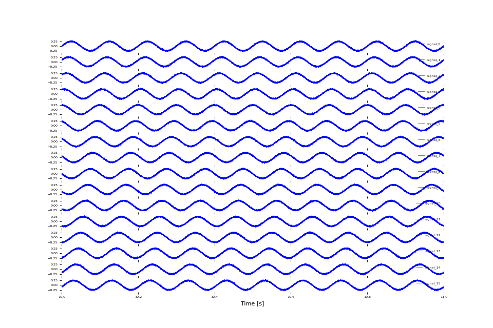
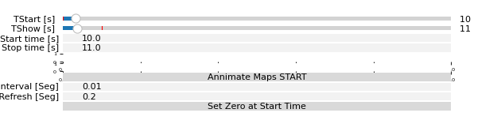
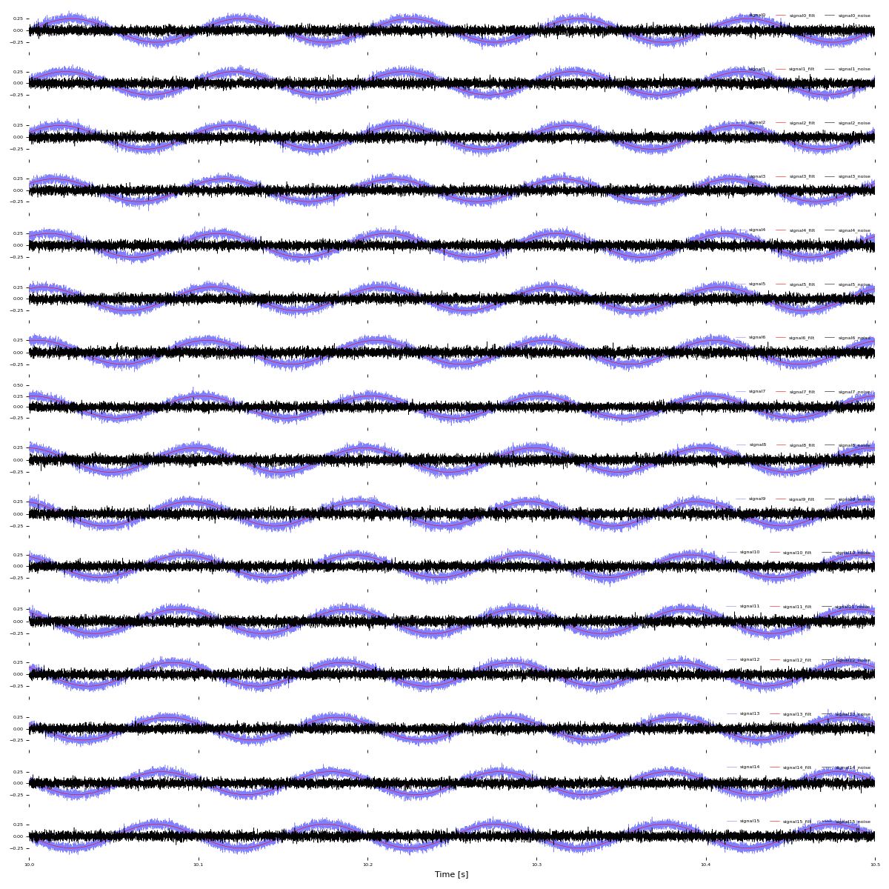

Getting Started
This tutorial introduces basic usage of PhyREC for signal visualization and analysis.
Installation
pip install phyrec
Using PhyREC Matplotlib Style
The PhyREC style applies optimized matplotlib settings for electrophysiology data visualization:
Minimal visual clutter: Removes unnecessary axis spines (borders) for cleaner plots
Readable labels: Uses appropriately sized tick labels for multi-channel displays
Clean legends: Removes legend frames for a more professional appearance
Consistent formatting: Ensures uniform styling across all your visualizations
PhyREC.mplstyle contents:
xtick.labelsize : xx-small
ytick.labelsize : xx-small
legend.frameon : False
legend.loc : lower left
axes.spines.left : False
axes.spines.bottom : False
axes.spines.top : False
axes.spines.right : False
To use the style:
import matplotlib.pyplot as plt
# Apply the PhyREC matplotlib style
plt.style.use('PhyREC.mplstyle')
# Now create your plots with consistent PhyREC styling
# ... rest of your plotting code ...
The style can also be applied system-wide by copying PhyREC.mplstyle to your matplotlib configuration directory.
Key Classes
PhyREC.PlotWaves.WaveSlot: Handles visualization of a single signal channelPhyREC.PlotWaves.PlotSlots: Manages collections of WaveSlot instances with unified controls:py:module:`PhyREC.SignalProcess`: Library of signal processing functions (filters, detrending, etc.) that can be applied to signals before plotting
Generating Dummy Signals
This reusable code block creates synthetic electrophysiology signals with realistic noise and phase shifts. This signal generation can be reused across different plotting examples.
from neo import AnalogSignal
import numpy as np
import quantities as pq
# ============================================================================
# SIGNAL GENERATION BLOCK (Reusable)
# ============================================================================
# ============================================================================
# 1. DEFINE SIGNAL PARAMETERS
# ============================================================================
# Sampling rate (Hz) - typical for electrophysiology recordings
Fs = 30000 # 30 kHz sampling rate
# Signal duration (seconds)
T = 300 # 300 seconds of data
# Frequency of the sinusoidal component we're simulating (Hz)
f0 = 10 # 10 Hz oscillation
# Amplitude of the sinusoidal signal (volts)
A = 250e-6 # 250 µV (micro-volts converted to volts)
# Gaussian noise standard deviation (volts) - simulates background noise
noise_rms = 20e-6 # 20 µV RMS noise level
# Create time vector in seconds
# This defines the time points at which we'll sample our signal
t = np.arange(0, T, 1 / Fs)
# ============================================================================
# 2. GENERATE SYNTHETIC SIGNALS WITH PHASE SHIFTS
# ============================================================================
# Number of channels to simulate
nSigs = 16
Sigs = []
for i in range(nSigs):
# Define phase shift for each channel (in radians)
# Each channel has a different phase to simulate multi-electrode recordings
# with temporal relationships
phase_shift = (i * 2 * np.pi) / nSigs # Linear phase distribution across channels
# Create clean sinusoidal component with phase shift
# This simulates periodic neural oscillations with phase differences
# between channels (e.g., from waves propagating across the tissue)
signal = A * np.sin(2 * np.pi * f0 * t + phase_shift)
# Generate Gaussian noise to simulate real electrophysiology recording noise
# Noise is Gaussian-distributed with specified RMS value
noise = np.random.normal(0, noise_rms, size=t.shape)
# Combine signal and noise to create realistic synthetic data
sig = signal + noise
# Create neo.AnalogSignal object
# AnalogSignal is the standard container for continuous electrophysiology data
# It includes both data and metadata (sampling rate, units, channel name)
Sigs.append(AnalogSignal(
sig, # Signal data array
units='V', # Physical units (volts)
sampling_rate=Fs*pq.Hz, # Sampling rate with quantities units
name='signal_' + str(i), # Channel identifier
))
Basic Plotting Example
This example demonstrates visualizing the generated signals using PhyREC’s multi-channel plotting capabilities with interactive controls.
# ============================================================================
# Plot Setup and Configuration
# ============================================================================
# Create a figure with one subplot per signal (16 subplots stacked vertically)
# sharex=True links all x-axes together for synchronized zooming/panning
pltFig, pltAxes = plt.subplots(len(Sigs), 1, sharex=True, figsize=(15,15))
# Create WaveSlot objects for each signal
# WaveSlot is a PlotWaves class that handles signal visualization and interactive features
Slots = []
for i, sig in enumerate(Sigs):
# Each WaveSlot wraps a signal with plotting parameters
Slots.append(PltW.WaveSlot(sig,
color='blue', # Line color for the waveform
Units='mV', # Display units (converted from volts)
label=sig.name, # Label displayed in legend
Ax=pltAxes[i])) # Assign to corresponding subplot
# ============================================================================
# Interactive Plot Control
# ============================================================================
# PlotSlots is the main container that manages all plot slots and coordinates visualization
Splt = PltW.PlotSlots(Slots,
Fig=pltFig,
LiveControl=True) # Enable interactive controls (sliders, buttons, etc.)
# Plot 1 second of data across all channels
# Time is specified using Quantity objects with units from the 'quantities' package
Splt.PlotChannels((10 * pq.s, 11 * pq.s))
# Add a legend showing channel names
Splt.AddLegend()
#
plt.tight_layout()
# The plot is now interactive and can be explored using the live control interface

{kind=link}
{kind=link}

{kind=link}
{kind=link}
Basic Signal Filtering Example
This example shows how to apply common digital filters to continuous signals using PhyREC.SignalProcess. It generates synthetic multi‑channel data, then demonstrates a band‑pass filter (to isolate an oscillatory band) and a band‑stop/notch filter (to remove that band). The example plots raw, band‑passed, and band‑stopped traces together so you can compare effects visually and verify filter parameters (Freqs, Order). Use LiveControl to navigate time and adjust the plotted window.
import PhyREC.SignalProcess as prspro
# Note: This code block assumes you have already generated the Sigs list of neo.AnalogSignal objects
# and set up the plotting figure and axes as shown in the previous example.
# for i, sig in enumerate(Sigs):
# Paste the following code inside the loop that iterates over Sigs to apply filters and add new WaveSlots for the filtered signals.
# -----------------------------------------------------------------------
# Apply band-pass filter around the sine frequency to isolate oscillation
# -----------------------------------------------------------------------
sig_filt = prspro.Filter(sig,
Type='bandpass',
Order=4,
Freqs=(9, 11), # pass-band in Hz
)
# Filtered trace plotted in red
Slots.append(prplt.WaveSlot(sig_filt,
color='red',
Units='mV',
label=sig.name + '_filt',
Ax=pltAxes[i]))
# -----------------------------------------------------------------------
# Apply band-stop (notch) filter at the same frequency range. The result
# can be interpreted as the 'noise' after removing the oscillatory band.
# -----------------------------------------------------------------------
sig_filt = prspro.Filter(sig,
Type='bandstop',
Order=4,
Freqs=(9, 11),
)
# Notch-filtered trace plotted in black
Slots.append(prplt.WaveSlot(sig_filt,
color='black',
Units='mV',
label=sig.name + '_noise',
Ax=pltAxes[i]))

{kind=link}
{kind=link}
{kind=link}
{kind=link}